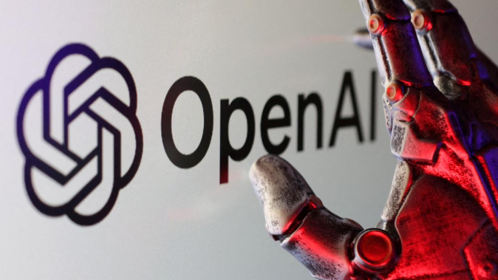
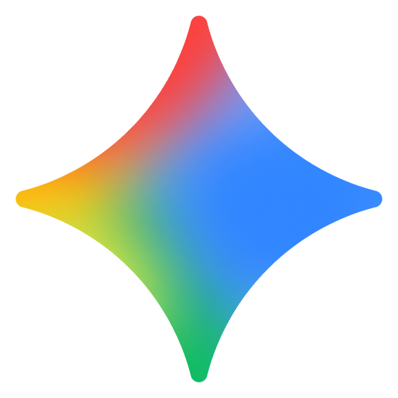
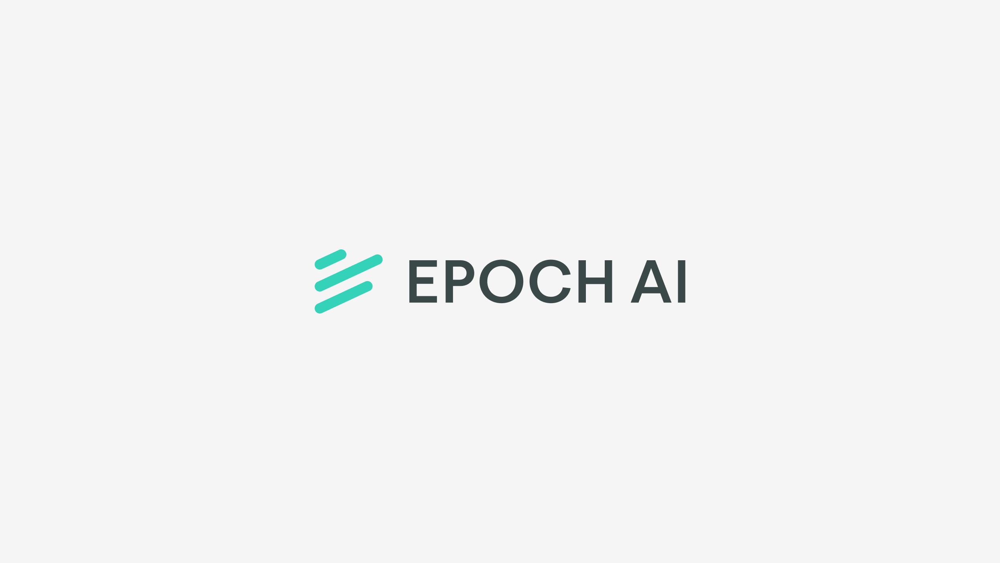
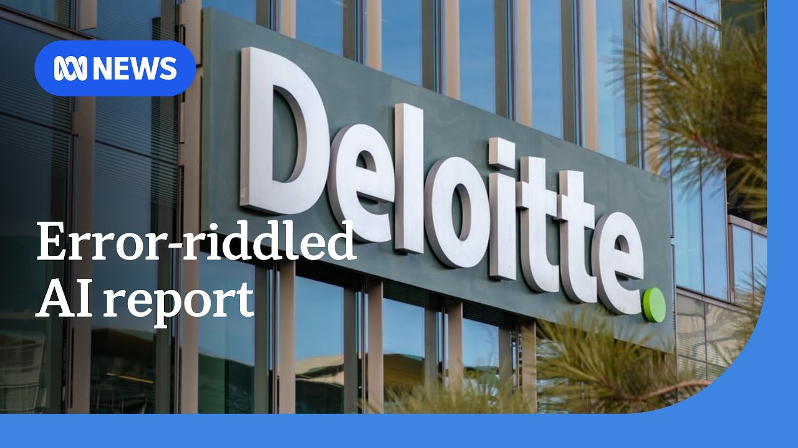
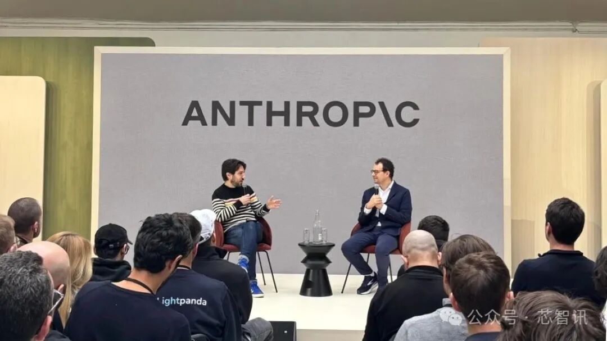
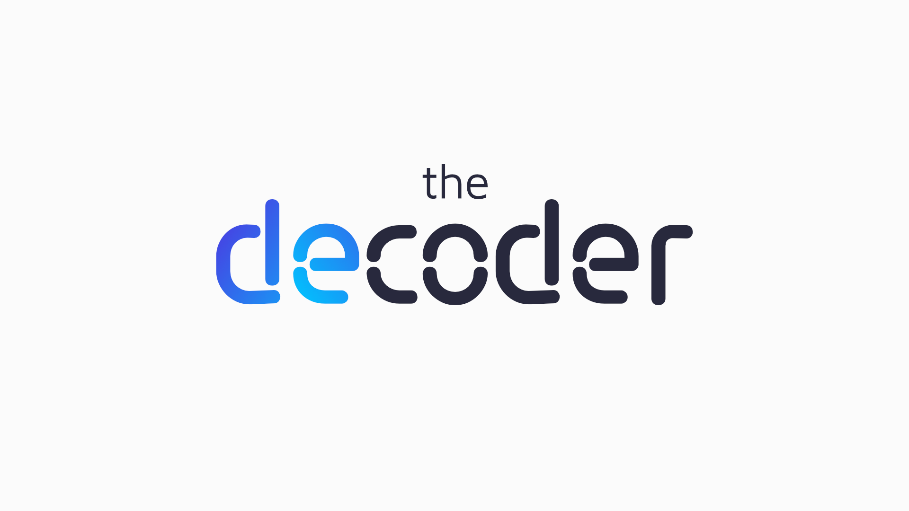
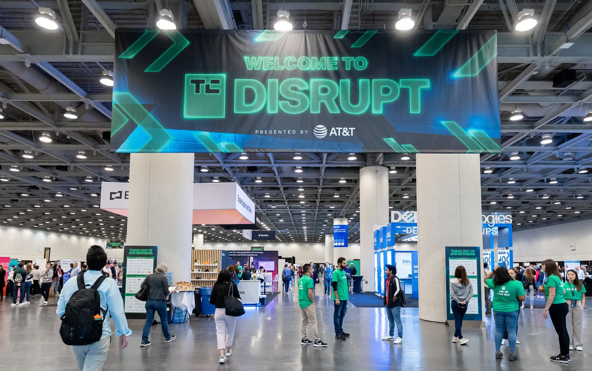
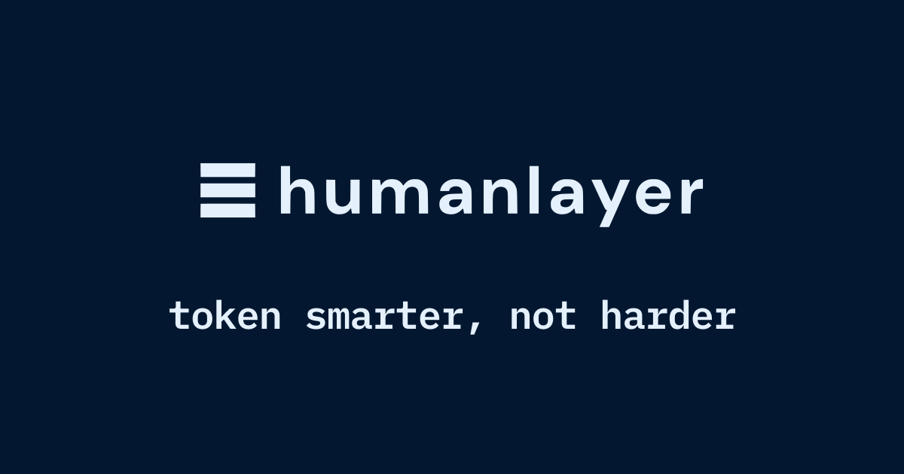

Janet 快车箱
AI Daily Briefing
2026-06-30
VOL 273
对中国创作者和中小企业来说，最大变化不是再追一个模型名字，而是入口正在变少。会写 prompt 已经不够，接下来要会选供应商、控成本、留备份、把 Agent 放进可衡量的工作流里；否则别人买的是生产线，你买的只是聊天窗口。
接下来 2-4 周重点盯三件事：政府采购会不会继续给 Anthropic、OpenAI 这类公司开绿灯；AI 编码公司能不能把 Demo 变成真实交付；数据中心电力、水和冷却成本会不会继续把模型价格往上顶。

OpenAI 的 GPT-5.6 系列在部分受邀和经过审批的客户中开放，外界关注 Sol、Terra、Luna 三档模型的上下文长度、推理时延和企业访问限制。公开可用性仍未全面铺开。

Google 将 Gemini 的个性化图像生成能力扩展给美国免费用户，用户可在对话中生成更贴近个人上下文的图片。该能力被视为 Gemini App 继续抢占消费级创作入口的一步。

据报道，Meta 限制员工在内部代码和敏感项目中使用 Anthropic Claude Code、OpenAI Codex 等外部 AI 编程工具，理由包括代码安全、数据外流和供应商依赖风险。

Epoch AI 发布 MirrorCode 基准，用真实软件修改任务测试模型理解和改写代码库的能力。该基准强调多文件上下文、回归风险和真实工程约束，而不是只看短题刷分。

Deloitte 相关报告指出，生成式 AI 正在冲击咨询和专业服务业的 billable hour 模式。AI 可压缩研究、草稿、分析和文档准备时间，客户会更倾向为结果付费。

欧洲对主权 AI 和本地数据控制的需求继续升温，Anthropic 等美国模型公司加速与欧洲政府、云厂商和企业客户谈合作。企业客户重点关心数据边界、监管责任和本地部署选项。

研究者推出 CEO-Bench，用创业公司经营模拟测试 AI 模型的管理能力。结果显示，多数模型在市场、融资、招聘和现金流权衡上表现不稳定，说明“AI CEO”离真实经营仍有距离。

有关美国军方 AI 目标识别系统的报道显示，系统曾将学校相关图像误归入可疑目标流程，引发对自动化目标识别、人工复核和军事 AI 风险的质疑。
8090 Labs 的 1.35 亿美元 A 轮显示资本仍在押注 AI 编码公司，尤其是能面向企业研发流程收钱的团队。投资逻辑从“开发者喜欢”转向“企业能不能少招人”。
Omen 的 3100 万美元融资说明 AI 基础设施投资正在外溢到冷却、水、电和运维系统。随着训练和推理负载增加，数据中心边际成本会被拆成更多可投资环节。

Arena AI 披露 1 亿美元 ARR，意味着模型评测、红队测试和真实任务验证已经从研究社区进入企业采购。AI 预算越大，企业越需要第三方证明钱没有白烧。

HumanLayer 推出面向 AI Agent 的人工审批和权限控制工具，让 Agent 在发邮件、改数据、合并代码或调用外部系统前先请求人类确认。它主打把高风险自动化变成可控工作流。